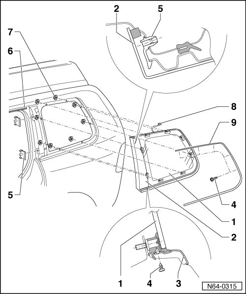

Side Window Assembly Overview
Bolted Windows
Side Window Assembly Overview

1 Side Window
• To remove side window, the headliner must first be removed.
2 C-pillar trim
• Trim is part of side window and is not to be replaced separately.
3 Trim molding
4 Bolt
• Quantity: 8
5 Retaining clip
6 Drip deflector
7 Flanged hex nut
• Quantity: 8
• 4.5 Nm
• The torque must always be observed.
8 Antenna connector
9 Trim molding
• Secured to the side window with a screw - 4 -